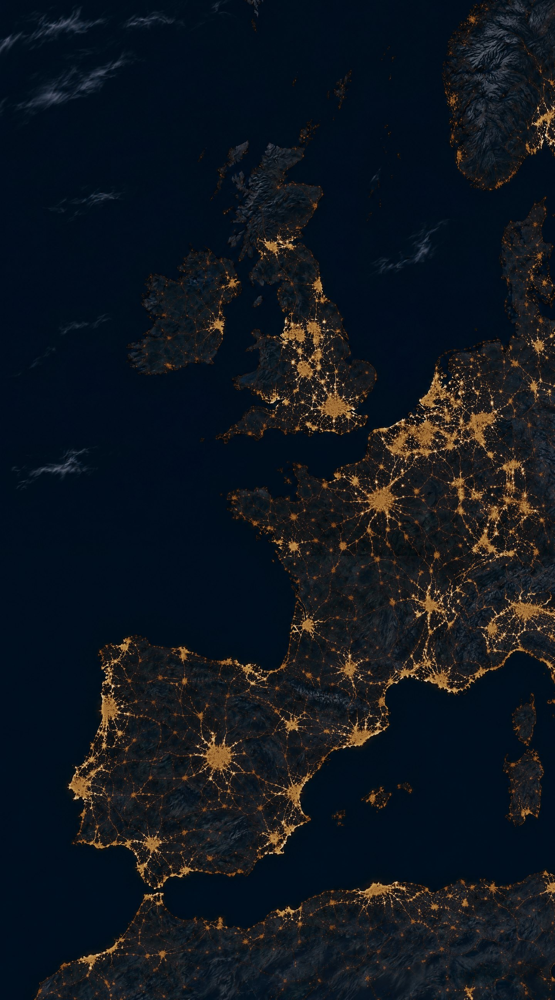

The whole Earth at night. The UK, France and Spain, and Japan are the detailed sections.
Loading the map
This device can't draw the 3D globe, so here is the finished artwork laid flat: the UK at the top, France and Spain below.
